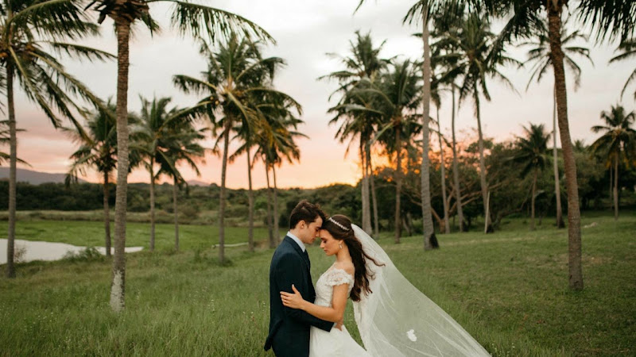
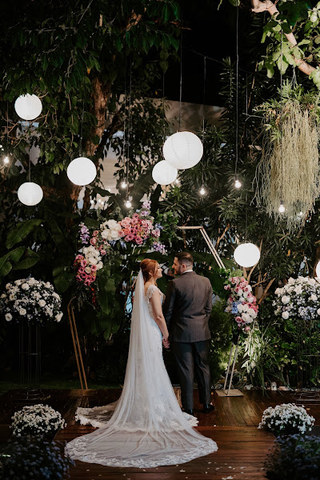

Cartão de embarqueDestino: o grande dia
Embarque nesse sonho
Assessoria e cerimonial de casamento com Suzanne Barros e equipe, com amor e postura em cada detalhe.
PassageirosOs noivos
TripulaçãoSuzanne e equipe
EmbarqueCidade Nova, Fortaleza
Assessoria e cerimonial de casamento com Suzanne Barros e equipe, com amor e postura em cada detalhe.


Suzanne Barros conduz assessoria e cerimonial de casamentos em Fortaleza ao lado da sua equipe. Quem já trabalhou com ela fala sempre das mesmas coisas: o amor pelo que faz e a postura em cada etapa.
Até colegas de mercado reconhecem: quando a Suzanne está no casamento, tudo flui. Para os noivos, isso significa viver o dia sem precisar se preocupar com a organização.
Escolha o roteiro que combina com o momento de vocês. A Suzanne explica cada um em detalhe na conversa.
Para quem quer companhia ao longo da viagem: apoio no planejamento e nas decisões, até chegar ao grande dia.
Para quem já organizou tudo e quer alguém conduzindo a cerimônia e a festa, para viver cada momento com tranquilidade.
Palavras de clientes e de quem divide o casamento com ela, publicadas no Google.
“É nítido o amor com que a Suzanne e sua equipe trabalham. Simplesmente sensacional.”
Avaliação no Google“Trabalha com amor, realiza o sonho de cada cliente com o mesmo amor como se fosse o seu sonho.”
Avaliação no Google“Profissional de postura exemplar... Sempre que temos um casamento juntos, é a certeza de que tudo irá fluir perfeitamente.”
Parceiro de casamentos · Google#embarquenessesonho
5 perguntas rápidas. No fim, você vê um roteiro sugerido e manda tudo pronto para a Suzanne pelo WhatsApp.
WhatsApp: (85) 98417-1443
Endereço: R. do Sol 02, 155 · Cidade Nova, Fortaleza - CE
Embarcar no meu sonho: falar com a Suzanne